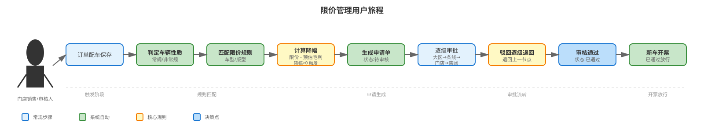
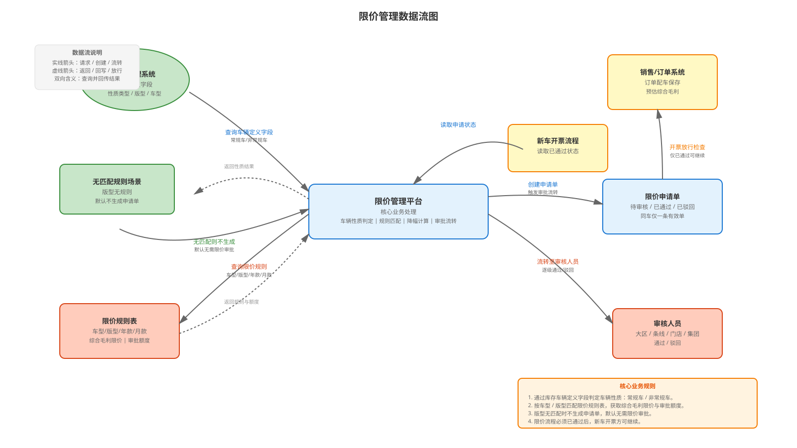

| 时间 | 版本号 | 变更人 | 变更类型 | 预计上线时间 | 主要变更内容 |
|---|---|---|---|---|---|
| 2026-09-09 | V2.0 | AI整理 | 功能扩展 | 待计划 | 第二阶段迭代需求：飞书消息推送与H5移动审核。限价申请单生成时，系统通过飞书机器人向对应审批人员（大区总、条线审批人、门店/集团审核人）发送消息通知，包含申请单号（XJ+ERP+日期）、流程模块、当前审批人、提交时间等信息。审批人员通过消息中的超链接点击"立即审核"，通过SSO免登录直跳至H5审核页面进行对应节点审批，审批逻辑与PC端保持一致。支持的消息场景包括：大区/条线/门店/集团审核通知、审核通过通知、驳回通知。H5页面支持申请单信息展示、审批意见输入、通过/驳回操作，同时支持响应式设计适配手机/平板屏幕。 |
| 2026-09-09 | V1.2 | AI整理 | 规则调整 | 待定 | 审批人定位与单据过滤调整：大区审核按门店所属大区过滤单据，由该大区大区总审批（如郑州盈丰 ERP号3059 属河南一区，其限价申请单均由河南一区大区总王芬审批）；条线审核按品牌+产品序列定位门店运营销售支持进行审批（C网/H网-刘邓淅、E网/R网-章登廷、Q网-马兆初、捷途/星途-周彬、iCAR-陈核锋）。新增门店-大区映射表与条线审批人配置表，同步更新用户旅程、数据流图、状态机及说明。 |
| 2026-08-31 | V1.1 | AI整理 | 规则调整 | 待定 | 审批逻辑整体调整：1)预估综合毛利 ≥ 综合毛利限价无需审批；2)预估综合毛利为负值走全部审批（集团审核）；3)预估综合毛利 < 综合毛利限价按降幅命中层级配置金额判定需审核级别。列表、审核页、详情页同步支持"无需审批"状态。 |
| 2026-08-31 | V1.0 | AI整理 | 创建 | 待定 | 基于盈丰运营管理平台限价管理原型及业务规则，整理生成限价管理 PRD，覆盖车辆性质判定、限价申请触发、多级审批流转及限价规则表维护。 |
| 一级菜单 | 二级菜单 | 三级菜单 | 功能菜单 | 功能模块 | 功能说明 | 使用角色 | 阶段 |
|---|---|---|---|---|---|---|---|
| 盈丰运营管理平台 | 限价管理 | 限价列表 | 限价列表页 | 查询展示 | 查看车辆限价与审批权限配置明细。 | 销售运营、财务、门店销售 | V1.0 |
| 盈丰运营管理平台 | 限价管理 | 限价规则 | 限价规则页 | 规则维护 | 维护车辆车型限价规则及各级审批权限额度，支持单独新增与批量导入。 | 销售运营、财务 | V1.0 |
| 盈丰运营管理平台 | 限价管理 | 限价申请 | 限价申请列表页 | 申请单查询 | 查看限价申请单列表，跟踪各单审核状态、所需审核级别及审批进度。 | 门店销售、审核人员、财务 | V1.0 |
| 盈丰运营管理平台 | 限价管理 | 限价申请 | 限价申请审核页 | 审批处理 | 对限价申请单进行通过或驳回操作，逐级完成大区、条线、门店、集团审批；大区总与条线审批人仅可见并处理与其职责匹配的单据。 | 各审核级别审核人员 | V1.0 |
| 盈丰运营管理平台 | 限价管理 | 限价申请 | 限价申请详情页 | 详情查看 | 只读查看申请单号、车辆信息、限价信息、审核结果与审核意见。 | 门店销售、审核人员、财务 | V1.0 |
| H5 移动端 | 飞书消息 | 限价审核 | H5 限价审核页 | 移动审批处理 | 通过飞书消息链接 SSO 免登录跳转至 H5 页面，进行限价申请单的审批操作（通过/驳回），功能与 PC 端保持一致，支持响应式设计适配手机/平板屏幕。 | 各审核级别审核人员 | V2.0 |
限价管理 --- 限价规则（1 --> N），限价申请单 --- 审批记录（1 --> N），限价规则表按车辆版型关联车辆档案；限价申请单通过门店销售ERP号关联门店大区映射（N --> 1）确定所属大区与大区总，通过品牌+产品序列关联条线审批人配置（N --> 1）确定条线审批人。
| 对象名称 | 名称 | 是否必填 | 类型 | 长度 | 备注 |
|---|---|---|---|---|---|
| 限价规则 | 车辆性质类型 | 是 | 枚举 | - | 枚举值：常规车、冰雹车、其他非常规车。除常规车外统一视为非常规车。 |
| 限价规则 | 品牌 | 是 | 文本 | 100 | 车辆品牌。 |
| 限价规则 | 产品系列 | 是 | 文本 | 100 | 产品系列名称。 |
| 限价规则 | 车系 | 是 | 文本 | 100 | 车辆车系。 |
| 限价规则 | 车型 | 是 | 文本 | 200 | 具体车型名称。 |
| 限价规则 | 版型 | 是 | 文本 | 100 | 车辆版型，用于匹配限价审批（如尊贵型）。 |
| 限价规则 | 年款 | 条件必填 | 文本 | 30 | 常规车必填年份；非常规车无需维护。 |
| 限价规则 | 月份 | 条件必填 | 文本 | 30 | 常规车必填月份；非常规车无需维护。 |
| 限价规则 | 综合毛利限价 | 是 | 数字 | - | 该车型允许的最低综合毛利值，可为负数。 |
| 限价规则 | 大区审核额度 | 是 | 数字 | - | 大区审核允许覆盖的降幅，默认 1000。 |
| 限价规则 | 条线审核额度 | 是 | 数字 | - | 条线审核允许覆盖的降幅，默认 1000。 |
| 限价规则 | 门店审核额度 | 是 | 数字 | - | 门店审核允许覆盖的降幅，默认 500。 |
| 限价规则 | 集团审核额度 | 是 | 数字 | - | 集团审核允许覆盖的降幅，默认 0（不设上限）。 |
| 限价申请单 | 申请单号 | 是 | 文本 | 50 | 自动生成：XJ + 经销商ERP号 + 年月日 + 流水号，如 XJ3463-1202608260001。 |
| 限价申请单 | 门店销售ERP号 | 是 | 文本 | 50 | 所属门店销售 ERP 号。 |
| 限价申请单 | 门店名称 | 是 | 文本 | 100 | 申请门店名称。 |
| 限价申请单 | 所属大区 | 是 | 文本 | 50 | 由门店-大区映射表按门店销售ERP号自动带出，用于大区审核单据过滤，如 3059/郑州盈丰 → 河南一区。 |
| 限价申请单 | 大区总 | 是 | 文本 | 50 | 由门店-大区映射表自动带出的该大区负责人，大区审核节点审批人，如河南一区-王芬。 |
| 限价申请单 | 条线审批人 | 条件必填 | 文本 | 50 | 需条线审核时由品牌+产品序列对应的门店运营销售支持自动带出。 |
| 限价申请单 | VIN码 | 是 | 文本 | 50 | 车辆唯一识别码，每车仅允许一条有效申请单。 |
| 限价申请单 | 车辆信息 | 是 | 对象 | - | 包含品牌、产品系列、车系、车型、年款、动力、版型、颜色、采购类型、生产/入库日期、采购价格（含税）。 |
| 限价申请单 | 综合毛利限价 | 是 | 数字 | - | 来自限价规则表当前车型限价。 |
| 限价申请单 | 预估综合毛利 | 是 | 数字 | - | 订单配车保存时系统计算出的预估综合毛利，可为负数。 |
| 限价申请单 | 降幅 | 是 | 数字 | - | 综合毛利限价 - 预估综合毛利。预估综合毛利 ≥ 综合毛利限价时不触发审批。 |
| 限价申请单 | 需审核级别 | 条件必填 | 枚举 | - | 大区审核、条线审核、门店审核、集团审核。无需审批的单据不生成该值。判定规则：预估毛利为负值 → 集团审核；预估毛利低于限价 → 按降幅命中层级配置金额判定。 |
| 限价申请单 | 审核状态 | 是 | 枚举 | - | 待审核、已通过、已驳回。待审核/已驳回均为有效申请单。 |
| 限价申请单 | 审核意见 | 驳回时必填 | 长文本 | 2000 | 审核人填写的审批意见，驳回时必须填写。 |
| 限价申请单 | 审核人 | 否 | 文本 | 100 | 完成最后审核操作的审核人员。 |
| 限价申请单 | 审核时间 | 否 | 日期时间 | - | 最后审核操作时间。 |
| 限价申请单 | 创建时间 | 是 | 日期时间 | - | 申请单生成时间。 |
| 审批记录 | 审批级别 | 是 | 枚举 | - | 大区、条线、门店、集团。 |
| 审批记录 | 审批人 | 是 | 文本 | 100 | 执行该级审批的审核人员；大区级由门店所属大区的大区总执行，条线级由品牌+产品序列对应的门店运营销售支持执行。 |
| 审批记录 | 审批结果 | 是 | 枚举 | - | 通过、驳回。 |
| 审批记录 | 审批意见 | 驳回时必填 | 长文本 | 2000 | 该级审批意见。 |
| 审批记录 | 审批时间 | 是 | 日期时间 | - | 该级审批发生时间。 |
用户旅程图如下：

用户旅程流程说明如下：
注：若车辆版型在限价规则表中无匹配数据，则不生成限价申请单，默认该订单预估综合毛利大于综合毛利限价（视为无需限价审批）。
数据流图如下：

数据流图流程说明如下：
状态机图如下：
限价申请单关注的状态节点如下：
审核流转关系：
注：同一辆车同一时间仅允许存在一条有效限价申请单（待审核、已驳回视为有效），系统禁止重复生成多条申请单。限价流程必须为“已通过”，订单录入流程-【新车开票】方可继续执行。
原型来源：盈丰运营管理平台限价管理（src/prototypes/price-limit-apply、price-limit-list、共享限价逻辑 shared/price-limit）。
所属模块：限价管理
本页面依据限价管理原型、订单配车联动规则和库存车辆性质判定需求生成。
核心业务规则：
| 字段名 | 是否必填 | 控件类型 | 备注 |
|---|---|---|---|
| 申请单号 / VIN码 | 否 | 手工输入 | 支持按申请单号、VIN码查询。 |
| 审核状态 | 否 | 下拉单选 | 可选：全部、待审核、已通过、已驳回。 |
| 需审核级别 | 否 | 下拉单选 | 可选：全部、大区审核、条线审核、门店审核、集团审核。 |
| 列名 | 是否支持排序 | 特殊说明 | 截图 |
|---|---|---|---|
| 申请单号 | 是 | 点击可进入详情页 | |
| VIN码 | 是 | 车辆唯一识别码 | |
| 门店名称 / 门店销售ERP号 | 是 | 申请门店，用于大区单据过滤展示 | |
| 所属大区 | 是 | 由门店-大区映射带出，如河南一区 | |
| 车系 | 是 | ||
| 车型 | 是 | ||
| 预估综合毛利 | 是 | 低于限价时高亮警示 | |
| 综合毛利限价 | 是 | 来自限价规则表 | |
| 需审核级别 | 是 | 按审批规则判定：预估毛利 ≥ 限价显示"无需审批"；预估毛利为负值显示"集团审核"；预估毛利低于限价按降幅命中层级配置金额展示对应审核级别 | |
| 审核状态 | 是 | 待审核、已通过、已驳回 | |
| 创建时间 | 是 | 申请单生成时间 | |
| 审核人 | 是 | 完成最后审核的人员；大区节点显示门店所属大区的大区总，条线节点显示品牌+产品序列对应的门店运营销售支持 | |
| 审核时间 | 是 | 最后审核操作时间 |
| 操作按钮 | 按钮可用条件 | 按钮操作逻辑 | 截图 |
|---|---|---|---|
| 查询 | 始终可用 | 按筛选条件刷新列表数据。 | |
| 重置 | 始终可用 | 清空筛选条件并恢复默认值。 | |
| 导出 | 始终可用 | 导出当前限价申请单列表数据。 |
| 行级操作按钮 | 按钮可用条件 | 操作形式 | 按钮操作逻辑 | 截图 |
|---|---|---|---|---|
| 大区/条线/门店/集团审核 | 单据状态为待审核且当前为其所需审核级别，且单据在当前用户职责范围内（大区：门店属于其管辖大区；条线：品牌+产品序列属于其负责条线） | 跳转 | 进入限价申请审核页，对该单执行通过或驳回。 | |
| 无需审批 | 预估综合毛利 ≥ 综合毛利限价 | 只读标识 | 操作列显示"无需审批"标识，不提供审核按钮。 | |
| 查看 | 单据状态非待审核（已通过/已驳回） | 跳转 | 进入只读限价申请详情页，查看全部信息与审核结果。 |
| 字段名称 | 是否必填 | 控件类型 | 特殊说明 | ||
|---|---|---|---|---|---|
| 申请单号 | 是 | 只读 | 自动生成：XJ + 经销商ERP号 + 年月日 + 流水号，不可编辑。 | ||
| 门店销售ERP号 | 是 | 只读 | 所属门店销售 ERP 号。 | ||
| 门店名称 | 是 | 只读 | 申请门店名称。 | ||
| 所属大区 / 大区总 | 是 | 只读 | 由门店-大区映射表按门店销售ERP号自动带出；大区审核人定位依据。 | ||
| 条线审批人 | 条件展示 | 只读 | 需条线审核时按品牌+产品序列自动带出的门店运营销售支持。 |
| 字段名称 | 是否必填 | 控件类型 | 特殊说明 |
|---|---|---|---|
| VIN码 | 是 | 只读 | 车辆唯一识别码，高亮显示。 |
| SAP物料编号 / 物料编号 | 是 | 只读 | 车辆物料编号。 |
| 品牌 | 是 | 只读 | |
| 产品系列 | 是 | 只读 | |
| 车系 | 是 | 只读 | |
| 车型 | 是 | 只读 | |
| 年款 | 是 | 只读 | |
| 动力 | 是 | 只读 | |
| 版型 | 是 | 只读 | 用于匹配限价规则表的审批级别。 |
| 内饰颜色 / 外观颜色 | 是 | 只读 | |
| 采购订单类型 / 采购类型 | 是 | 只读 | |
| 生产日期 / 入库时间 | 是 | 只读 | |
| 采购价格（含税） | 是 | 只读 | 高亮显示。 |
| 字段名称 | 特殊说明 |
|---|---|
| 综合毛利限价 | 来自限价规则表，以卡片展示。 |
| 预估综合毛利 | 订单配车保存时计算，以卡片展示；低于限价时标注降幅并提示需审核确认。 |
| 需审核级别 | 按审批规则展示：无需审批、大区审核、条线审核、门店审核或集团审核。 |
| 降幅说明 | 预估毛利低于限价时提示降幅金额及当前级别权限额度说明；预估毛利为负值时提示"预估毛利为负值，需集团审核"；无需审批时不展示警告。 |
| 字段名称 | 是否必填 | 控件类型 | 特殊说明 |
|---|---|---|---|
| 审核状态 | 是 | 只读 | 当前显示待审核。 |
| 创建时间 | 是 | 只读 | 申请单生成时间。 |
| 审核意见 | 驳回时必填 | 多行文本 | 输入审核意见；驳回时未填写则提示错误。 |
| 操作按钮 | 按钮可用条件 | 按钮操作逻辑 | 截图 |
|---|---|---|---|
| 返回 | 始终可用 | 返回限价申请列表。 | |
| 驳回 | 始终可用 | 必须填写审核意见，驳回后单据状态为"已驳回"，逐级退回上一审批节点。 | |
| 通过 | 始终可用 | 当前级审核通过，流转至下一审批级别；若为最深级别，则申请单状态变为"已通过"。 |
| 页面模块 | 字段名称 | 特殊说明 |
|---|---|---|
| 申请单信息 | 申请单号 | 展示当前申请单号。 |
| 申请单信息 | 门店销售ERP号 | |
| 申请单信息 | 门店名称 | |
| 车辆信息 | VIN码 / 物料编号 / 品牌 / 系列 / 车系 / 车型 / 年款 / 动力 / 版型 / 颜色 / 采购信息 | 展示完整车辆信息，VIN 及采购价格高亮。 |
| 限价信息 | 综合毛利限价 / 预估综合毛利 / 需审核级别 | 展示降幅及需审核级别。 |
| 审核信息 | 审核状态 | 已通过或已驳回。 |
| 审核信息 | 审核人 | 完成最后审核的人员，未审核显示 -。 |
| 审核信息 | 审核时间 | |
| 审核信息 | 审核意见 | 展示最终审核意见，通过时可显示同意意见。 |
| 底部操作 | 返回列表 | 返回限价申请列表。 |
| 字段名称 | 是否必填 | 控件类型 | 特殊说明 |
|---|---|---|---|
| 车辆性质类型 | 是 | 下拉单选 | 常规车、冰雹车、其他非常规车。 |
| 品牌 | 是 | 下拉/输入 | |
| 产品系列 | 是 | 下拉/输入 | |
| 车系 | 是 | 下拉/输入 | |
| 车型 | 是 | 下拉/输入 | |
| 版型 | 是 | 下拉/输入 | 用于匹配限价审批。 |
| 年款 | 条件必填 | 下拉 | 仅当选"常规车"时必填年份。 |
| 月份 | 条件必填 | 下拉 | 仅当选"常规车"时必填月份。 |
| 综合毛利限价 | 是 | 数字 | 可为负数。 |
| 大区审核额度 | 是 | 数字 | |
| 条线审核额度 | 是 | 数字 | |
| 门店审核额度 | 是 | 数字 | |
| 集团审核额度 | 是 | 数字 |
特殊规则：选择"常规车"类型时，必须选择年份、月份进行维护；选择除常规车外（冰雹车等）任意一种非常规车类型时，无需选择年份、月份进行维护。
大区审核节点的单据按门店所属大区过滤：系统根据申请单的门店销售ERP号匹配门店-大区映射表，确定所属大区与大区总，该大区的限价申请单均由对应大区总审批。示例：郑州盈丰（ERP号 3059）属河南一区，则 3059 门店的限价申请单均由河南一区大区总王芬审批。
| 大区名称 | 下属门店 | 大区负责人 |
|---|---|---|
| 河南一区 | 郑州盈丰（ERP号 3059） | 王芬 |
| 郑州QQ | ||
| 郑州奇祥 | ||
| 郑州捷途 | ||
| 郑州红松 | ||
| 郑州山海 | ||
| 河南二区 | 安阳盈丰 | 胡军召 |
| 太原盈丰 | ||
| 太原QQ | ||
| 安徽一区 | 合肥盈丰 | 王超 |
| 合肥蜀山 | ||
| 合肥卧云 | ||
| 合肥经开 | ||
| 合肥星途 | ||
| 合肥爱咖 | ||
| 巢湖盈丰 | ||
| 巢湖风云 | ||
| 巢湖QQ | ||
| 安徽二区 | 阜阳和奇祥 | 邓小飞 |
| 阜阳风云 | ||
| 滁州和奇祥 | ||
| 滁州风云 | ||
| 滁州QQ | ||
| 马鞍山盈丰 | ||
| 江苏一区 | 徐州星途 | 蒋洁 |
| 徐州捷途 | ||
| 徐州瑞彩 | ||
| 徐州高新 | ||
| 徐州爱咖 | ||
| 江苏二区 | 淮安奇瑞 | 吕辉 |
| 淮安捷途 | ||
| 淮安风云 | ||
| 淮安QQ |
注：门店-大区映射数据以本表为准，门店所属大区调整时同步更新映射数据；新增门店须先维护映射关系，否则大区总无法看到该门店的限价申请单。
条线审核节点的单据按品牌+产品序列路由至对应的门店运营销售支持（条线审批人）进行单据审批。
| 品牌（产品序列） | 审批人（门店运营销售支持） |
|---|---|
| C网 | 刘邓淅 |
| H网 | 刘邓淅 |
| E网 | 章登廷 |
| R网 | 章登廷 |
| Q网 | 马兆初 |
| 捷途 | 周彬 |
| 星途 | 周彬 |
| iCAR | 陈核锋 |
注：同一审批人可覆盖多个品牌/产品序列（如刘邓淅负责 C网+H网）；申请单车辆信息的品牌+产品序列用于条线审批人匹配，匹配不到时应提示配置缺失并允许集团层兜底处理。
| 审核级别 | 单据过滤/路由规则 | 示例 |
|---|---|---|
| 大区审核 | 按申请单门店所属大区过滤，仅该大区大区总可见可审 | 郑州盈丰（3059）的单据仅河南一区-王芬可见 |
| 条线审核 | 按品牌+产品序列路由至对应门店运营销售支持 | C网车型单据由刘邓淅审批 |
| 门店审核 | 按申请门店过滤，仅该门店运营人员可见可审 | - |
| 集团审核 | 集团审核人员可见全部待审核单据 | - |
| 触发点 | 触发条件 | 系统动作 | 用户提示 |
|---|---|---|---|
| 订单配车保存 | 车辆性质已判定且车型/版型匹配到限价规则，且预估综合毛利 < 综合毛利限价（含预估毛利为负值） | 自动生成限价申请单，按需审核级别进入审批流程 | 弹出 toast：订单已触发限价审批，通过限价管理-限价申请跟踪审批进度。 |
| 预估综合毛利 ≥ 综合毛利限价 | 预估综合毛利不低于综合毛利限价 | 无需审批，不生成限价申请单，需审核级别与操作列展示"无需审批" | - |
| 车辆性质-非常规车 | 车辆被判定为冰雹车等非常规车 | 按非常规车规则匹配限价（不校验年月） | - |
| 车型版型无匹配 | 限价规则表中无该车型/版型匹配数据 | 不生成限价申请单，默认订单预估综合毛利大于综合毛利限价 | - |
| 同一车辆重复触发 | 车辆已存在一条有效限价申请单（待审核/已驳回） | 禁止重复生成多条申请单 | 提示该车辆已存在有效限价申请单。 |
| 新车开票 | 订单限价流程状态为"已通过" | 允许继续执行订单录入流程-【新车开票】 | 未通过时禁止继续开票。 |
| 接口名称 | 接口说明 | 请求方式 | 请求参数 | 响应参数 |
|---|---|---|---|---|
| 查询限价申请列表 | 根据筛选条件查询限价申请单列表 | POST | 申请单号/VIN、审核状态、需审核级别、分页参数 | 限价申请单列表、总数 |
| 查询限价申请详情 | 根据申请单号查询限价申请单详细信息 | GET | 申请单号 | 申请单信息、车辆信息、限价信息、审核信息 |
| 审批限价申请 | 对限价申请单执行通过或驳回审批 | POST | 申请单号、审批级别、审批结果、审批意见 | 审批结果、更新后的申请单状态 |
| 查询限价规则 | 根据车型/版型查询限价规则及审批额度 | GET | 车型、版型 | 综合毛利限价、各级审批额度 |
| 新增限价规则 | 单独新增车辆限价信息及审批额度 | POST | 车辆性质类型、车型各属性、综合毛利限价、各级审批额度 | 新增结果 |
| 批量导入限价规则 | 通过批量导入方式新增限价规则 | POST | 导入文件、字段映射 | 导入结果、成功/失败明细 |
| 判断车辆性质 | 根据库存车辆定义字段判断车辆为常规车或非常规车 | GET | VIN码 | 车辆性质类型 |
| 计算降幅与需审核级别 | 根据预估综合毛利与综合毛利限价按审批规则判定:≥限价不触发、负值固定集团、低于限价按降幅命中层级配置金额 | POST | 预估综合毛利、综合毛利限价、各级审批额度 | 降幅、需审核级别、是否触发 |
盈丰运营管理平台与以下系统存在数据交互：
| 模块 | 接口提供方 | 接口调用方 | 接口名称 | 接口地址 | 接口文档 |
|---|---|---|---|---|---|
| 库存管理 | 库存管理系统 | 限价管理 | 查询车辆档案及性质 | /api/vehicle/query | 待补充 |
| 销售/订单 | 销售订单系统 | 限价管理 | 写入预估综合毛利并触发判定 | /api/order/margin/calc | 待补充 |
| 订单录入 | 订单录入流程 | 限价管理 | 查询限价流程状态放行开票 | /api/order/invoice/check | 待补充 |
| SAP/物料 | SAP 系统 | 限价管理 | 获取物料与采购价格 | /api/sap/material/query | 待补充 |
限价申请单生成时，系统需实时通过飞书机器人向对应的审批人员（大区总、条线审批人、门店/集团审核人）发送消息通知，通知内容包含申请单号、流程模块、当前审批人、提交时间等信息。审批人员可通过消息中的超链接直接跳转至 H5 审核页面，进行对应节点的审批操作，无需重复登录。
| 触发场景 | 触发时机 | 接收方 | 消息内容 |
|---|---|---|---|
| 大区审核通知 | 限价申请单生成，需大区审核时 | 申请单所属大区的大区总（按门店-大区映射表获取） | 流程标题、流程模块、当前审批人、提交时间、H5审核链接 |
| 条线审核通知 | 大区审核通过，流转至条线审核时 | 车辆品牌+产品序列对应的门店运营销售支持（按条线审批人配置表获取） | 同上 |
| 门店审核通知 | 条线审核通过，流转至门店审核时 | 申请单所属门店的门店运营人员 | 同上 |
| 集团审核通知 | 门店审核通过或预估毛利为负值直接流转集团时 | 集团审核人员 | 同上 |
| 审核通过通知 | 申请单全部审核通过时 | 提交申请的门店销售人员 | 申请单号、流程结果、审批链接（只读详情页） |
| 驳回通知 | 任一级审核驳回时 | 提交申请的门店销售人员 | 申请单号、驳回级别、驳回原因、重新提交链接 |
飞书消息采用富文本卡片格式（Feishu Card Message），包含以下字段：
| 字段名 | 内容示例 | 备注 |
|---|---|---|
| 消息标题 | 限价申请审批通知 | 固定文案 |
| 流程标题 | XJ3356202609010001 + 3356 | 申请单号 + 经销商ERP号；点击跳转至 H5 审核页 |
| 流程模块 | 限价申请 | 固定文案 |
| 当前审批人 | 张三 / 李四 | 多人时以 / 分隔；当前审核级别的所有审批人 |
| 提交时间 | 2026-09-01 10:08:00 | 申请单创建时间（固定不变，不随流转而更新） |
| 审核按钮 | 立即审核 | CTA 按钮，点击跳转至 H5 审核页 |
H5 审核页面是限价管理 PC 端审核页面的移动版本，支持在手机浏览器上进行限价申请单的审批操作。页面通过 SSO 机制实现免登录访问，用户点击飞书消息链接后自动跳转至该页面。
H5 审核页面 URL 包含以下参数：
/h5/price-limit-apply/review?id=XJ3356202609010001&sso_token=xxx&redirect_uri=xxxid：申请单号（必填）sso_token：SSO 令牌，由飞书传递，用于免登录认证（必填）redirect_uri：审批完成后的重定向地址，通常为审批列表页或飞书对话（可选）| 功能区 | 功能说明 | 与 PC 端区别 |
|---|---|---|
| 申请单信息 | 只读展示：申请单号、门店、大区、VIN码、车辆信息等 | 与 PC 端一致 |
| 限价信息 | 只读展示：综合毛利限价、预估综合毛利、需审核级别、降幅说明 | 与 PC 端一致 |
| 审核信息 | 展示当前审核级别、创建时间；需审核时提供审核意见输入框 | 与 PC 端一致 |
| 底部操作 | 返回、驳回、通过三个按钮 | 界面布局适配移动端（按钮更大、间距更宽），操作逻辑与 PC 端保持一致 |
| 响应式设计 | 自适应手机、平板屏幕宽度，确保内容清晰可读 | PC 端无此需求 |
sso_token 参数，H5 页面接收该 token 后，无需用户重新登录即可访问。sso_token 的有效性（签名、过期时间等），确保安全。以下为完整的消息推送与审批流转示例：
XJ3356202609010001（门店ERP号3356，预估毛利1200，限价3000，降幅1800，需大区审核）。XJ3356202609010001 + 3356，当前审批人为 王芬，提交时间为 2026-09-01 10:08:00。王芬点击消息中的"立即审核"按钮，跳转至 H5 审核页面 /h5/price-limit-apply/review?id=XJ3356202609010001&sso_token=xxx，进行审核。刘邓淅。| 迭代阶段 | 功能 | 交付节点 | 优先级 |
|---|---|---|---|
| 第一阶段（当前） | PC 端限价管理平台（列表、审核、详情、规则维护） | 已交付 | P0 |
| 第二阶段 | 飞书消息推送 + H5 移动审核 | 待计划 | P1 |
| 第三阶段 | 审批流程可视化、审批人权限管理、报表分析 | 待规划 | P2 |
说明：本 PRD 基于盈丰运营管理平台限价管理原型（src/prototypes/price-limit-apply、price-limit-apply-copy 及共享限价判定逻辑 src/prototypes/shared/price-limit.ts）及订单配车联动规则整理生成。核心业务逻辑为：通过库存车辆定义字段判定车辆性质（常规车/非常规车），按车型版型匹配限价规则，比对预估综合毛利与综合毛利限价的降幅以触发多级限价审批（大区→条线→门店→集团），驳回逐级退回，仅当限价申请单"已通过"时订单方可进入【新车开票】。大区审核按门店所属大区过滤单据由对应大区总审批，条线审核按品牌+产品序列由对应门店运营销售支持审批。第二阶段通过飞书机器人消息推送向审批人员实时通知，提供 H5 移动审核端口，支持 SSO 免登录快速审批。